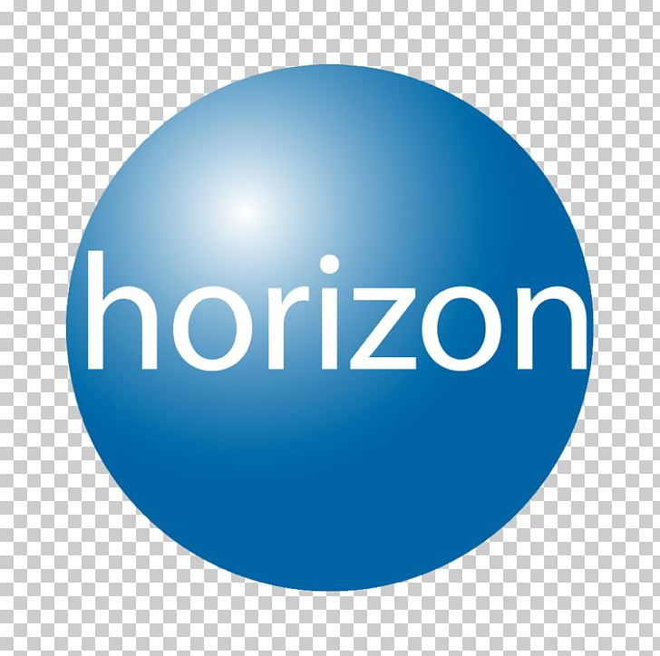

2025 –
Experience
Horizon Media · New York
Associate Director, Marketing Sciences
AI, ML & Product Analytics
Audience modeling, customer targeting and custom bidding for enterprise clients. Engineered features into the blu. product — 43% YoY ROAS improvement for a national furniture retailer.
NYU · Stern School of Business
MBA — Langone Part-Time Program
Product Management, Finance & Management
Part-time alongside Horizon and Intel. National Bank data center strategy consulting project.
2020 – 2024
Experience
Intel Corporation · New York · Portland · Phoenix
Data Scientist
NLP · Supply Chain Analytics · Enterprise ML
Four years building production ML systems at Intel — NLP contract risk screening across 100,000+ vendor contracts, supply chain fuzzy matching, parts classification, and demand forecasting on Azure and Databricks.
2018 – 2019
Education
Northwestern University · McCormick School of Engineering
MS — Machine Learning & Data Science
Applied ML · Statistical Modeling · Industry Practicums
One-year intensive MS with required industry practicums. Placed at Zurich Insurance Group (predictive modeling under enterprise constraints) and Here Technologies (geospatial ML, production prototype).

2014 – 2018
Education
University of California, San DiegoBS — Physics (Computational)
Minors: Business · Political Science
Computational physics specialization — differential equations, linear algebra, numerical methods, quantum mechanics and simulation.